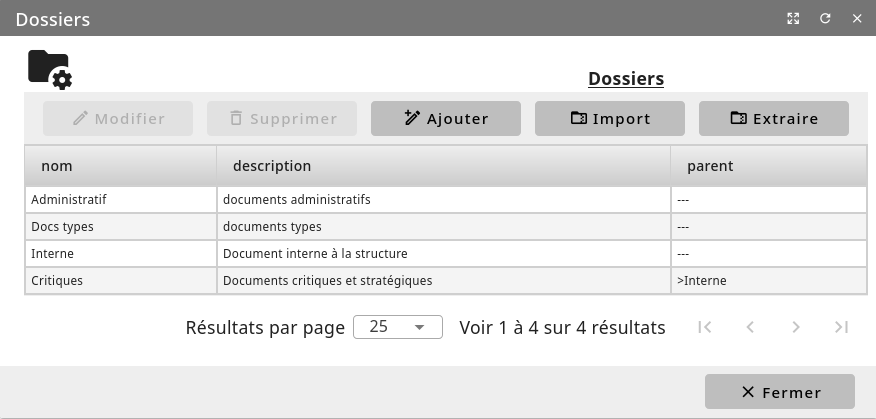

Configurer les dossiers¶
Pour votre gestion documentaire, vous disposez d’un ensemble d’outils.
Menu Administration/Module (conf)/Dossiers
A l’écran la liste des dossiers existants s’affiche. Vous avez la possibilité d’en créer de nouveaux et de modifier les paramètres des dossiers déjà présents.


En définissant judicieusement un dossier comme sous-dossier d’un dossier-parent, vous pouvez mettre en place une arborescence de dossiers respectueuse de votre plan de classement.
Pour chaque dossier, vous pouvez aussi définir les droits des groupes d’utilisateurs, que cela soit pour la visualisation ou la modification des fichiers qui sont/seront enregistrés dans le dossier. Ainsi, les utilisateurs appartenant aux groupes de visualisation pourront seulement consulter les documents contenus dans ce dossier. Les utilisateurs appartenant aux groupes de modification pourront, eux, les modifier ou les supprimer.
Le bouton « Extraire » permet de réaliser la sauvegarde d’un dossier et de son contenu sous forme d’une archive au format zip. Quand au bouton « Importer », il permet d’importer une archive au format zip qui sera décompressée automatiquement dans le dossier de destination spécifié.